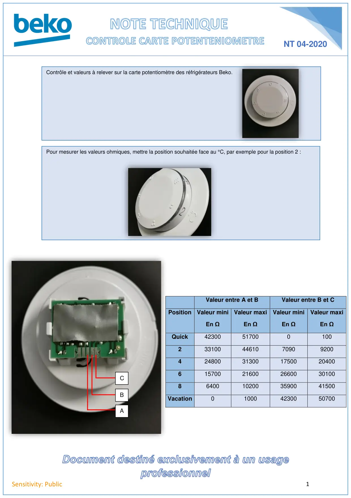

Contrôle potentionmetre

1Sensitivity: PublicNT 04-2020Valeur entre A et BValeur entre B et CPosition Valeur miniEn ΩValeur maxiEn ΩValeur miniEn ΩValeur maxiEn ΩQuick42300517000100233100446107090920042480031300175002040061570021600266003010086400102003590041500Vacation010004230050700CBAContrôle et valeurs à relever sur la carte potentiomètre des réfrigérateurs Beko.Pour mesurer les valeurs ohmiques, mettre la position souhaitée face au °C, par exemple pour la position 2 :
1 / 1